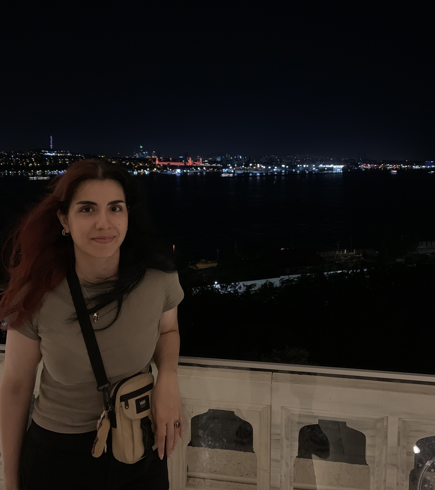
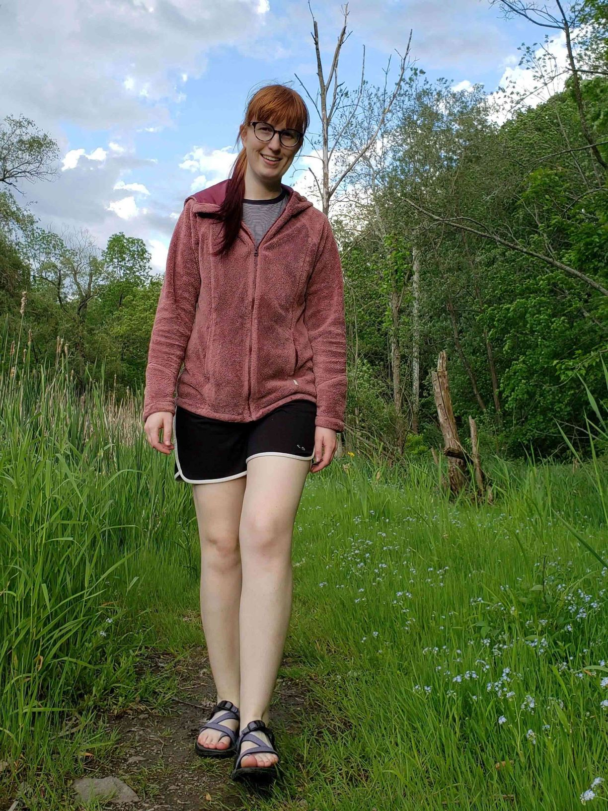
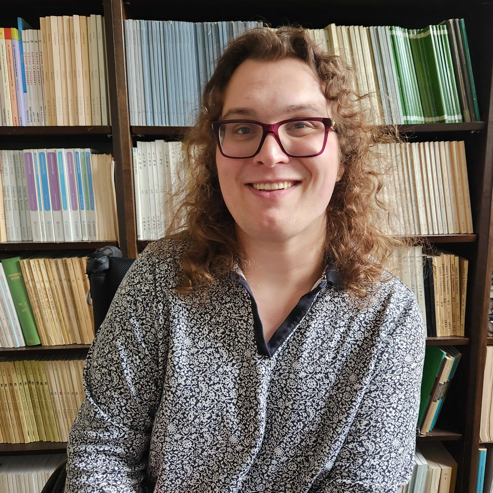
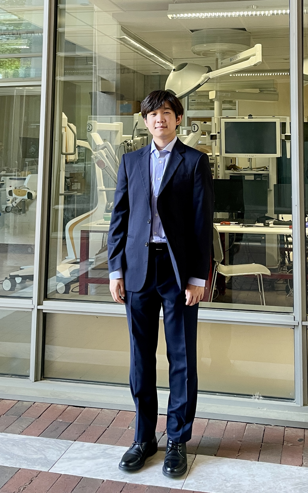
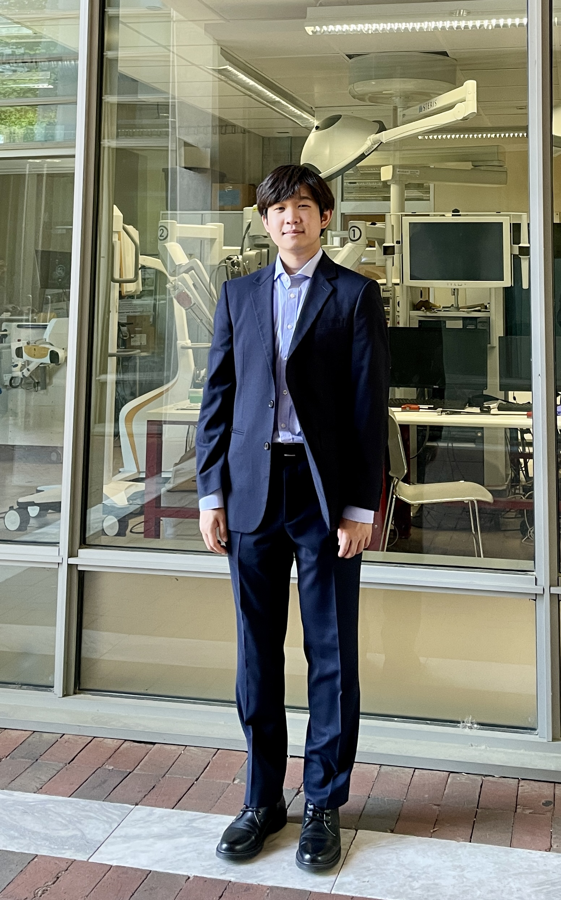
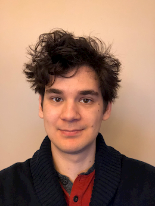
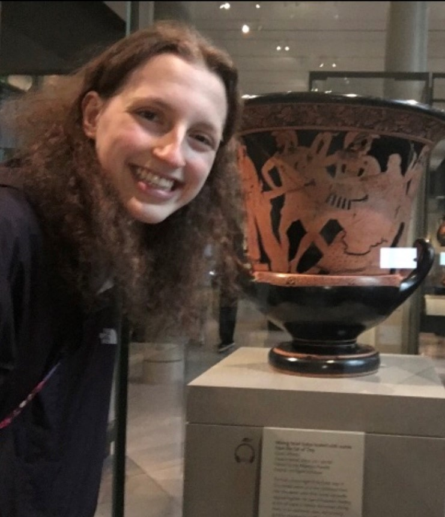
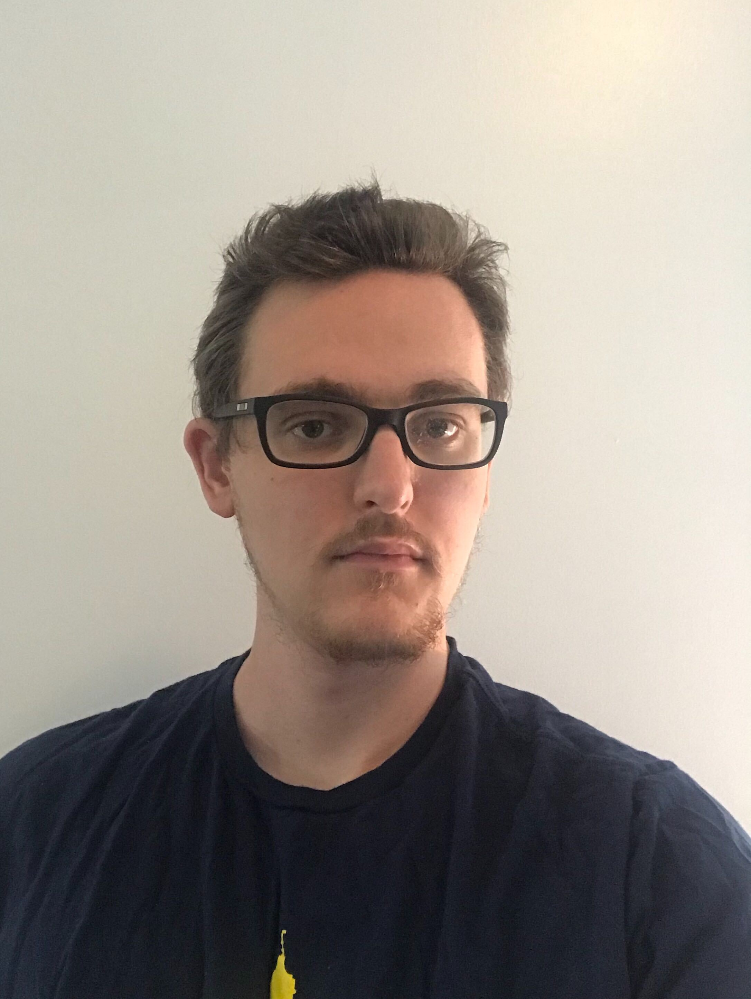

Director
 Dr. Scott Grimm is an associate professor in the Department of Linguistics and the director of the Quantitative Semantics Lab. He recieved his PhD from Stanford University in 2012.
Dr. Scott Grimm is an associate professor in the Department of Linguistics and the director of the Quantitative Semantics Lab. He recieved his PhD from Stanford University in 2012.
Student Researchers

Elif Ebru Ersöyleyen is a first-year PhD student in Linguistics. She recieved her MS in Cognitive Science from The Middle East Technical University.

Ellise Moon is a fifth-year PhD student in Linguistics and Philosophy. They recieved their MA in Linguistics from the University of Rochester in 2020 and their BA in English Literature from Montana State University in 2018.

Elodie Schley is a second-year PhD student in Linguistics. She recieved her BA in Sociolinguistics and Chemistry from Bennington College in 2022.
 Gargi Kowli is a first-year masters student in Linguistics.

Woo Jin Choi is a first-year PhD student in Linguistics. He recieved his BA in Computer Science and Cognitive Science from Johns Hopkins University.
Gargi Kowli is a first-year masters student in Linguistics.

Woo Jin Choi is a first-year PhD student in Linguistics. He recieved his BA in Computer Science and Cognitive Science from Johns Hopkins University.
Alumni

Jack Valinsky is a second-year masters student in Computational Linguistics. He recieved his BS in Computer Science from the University of Rochester in 2019, with a minor in Linguistics.

Megan Emery graduated from the University of Rochester in 2023, majoring Linguistics and History, and is currently a PhD student in history at Georgetown University.

Kai Schenck graduated in 2023 with a degree in Linguistics from the University of Rochester and is currently pursuing a PhD in linguistics at UC Berkeley.
 Adam Richman graduated from the University of Rochester in 2021 with majors in Linguistics and Brain and Cognitive Sciences and a minor in Philosophy.
Adam Richman graduated from the University of Rochester in 2021 with majors in Linguistics and Brain and Cognitive Sciences and a minor in Philosophy.
 Matthew Sundberg graduated from the University of Rochester in 2021, majoring in Computer Science with minors in Linguistics and Digital Media Studies.
Matthew Sundberg graduated from the University of Rochester in 2021, majoring in Computer Science with minors in Linguistics and Digital Media Studies.
 John Beebe graduated from the University of Rochester in 2020 majoring in Linguistics and English Literature, with a minor in Writing Studies.
John Beebe graduated from the University of Rochester in 2020 majoring in Linguistics and English Literature, with a minor in Writing Studies.
 Manasvi Chaturvedi graduated from the University of Rochester in 2020 in Linguistics and Brain and Cognitive Sciences, and is currently a PhD student in linguistics at Yale.
Manasvi Chaturvedi graduated from the University of Rochester in 2020 in Linguistics and Brain and Cognitive Sciences, and is currently a PhD student in linguistics at Yale.
 Yufei (Edward) Du recieved his MS in Computer Science from the University of Rochester in 2020.
Yufei (Edward) Du recieved his MS in Computer Science from the University of Rochester in 2020.
 Rebecca Friedman graduated from the University of Rochester in 2020, majoring in Linguistics and minoring in American Sign Language.
Rebecca Friedman graduated from the University of Rochester in 2020, majoring in Linguistics and minoring in American Sign Language.
 Katherine Trice graduated from the University of Rochester in 2020, majoring in Linguistics and minoring in American Sign Language.
Katherine Trice graduated from the University of Rochester in 2020, majoring in Linguistics and minoring in American Sign Language.
 Jeanne (Jiaxing) Yu received her MA in General Linguistics from the University of Rochester in 2020 and her BA in Chinese Literature and Languages from Nanjing University in 2018. She is currently pursuing her PhD in Linguistics at Rutgers University.
Jeanne (Jiaxing) Yu received her MA in General Linguistics from the University of Rochester in 2020 and her BA in Chinese Literature and Languages from Nanjing University in 2018. She is currently pursuing her PhD in Linguistics at Rutgers University.
 Elizabeth (Liz) Lee received her MS in Computational Linguistics from the University of Rochester in 2019 and her BA in Linguistics from the University of Florida. She is currently working at the Athinoula A. Martinos Center for Biomedical Imaging as a research programmer.
Elizabeth (Liz) Lee received her MS in Computational Linguistics from the University of Rochester in 2019 and her BA in Linguistics from the University of Florida. She is currently working at the Athinoula A. Martinos Center for Biomedical Imaging as a research programmer.
 Aeshaan Wahlang recieved his MS in Computer Science from the University of Rochester in 2019 and his BS in Computer Science from BMS college of Engineering, Bangalore, India. He works for Squarespace as a data scientist.
Aeshaan Wahlang recieved his MS in Computer Science from the University of Rochester in 2019 and his BS in Computer Science from BMS college of Engineering, Bangalore, India. He works for Squarespace as a data scientist.
 Caleb New graduated in 2018 with a MS in Computer Science from the University of Rochester; he recieved his BS in Computer Science from Weber State University. He currently works as a Software Engineer for FreeUs, a company which makes mobile Personal Emergency Response (mPERS) devices.
Caleb New graduated in 2018 with a MS in Computer Science from the University of Rochester; he recieved his BS in Computer Science from Weber State University. He currently works as a Software Engineer for FreeUs, a company which makes mobile Personal Emergency Response (mPERS) devices.
 Isabelle Schmit recieved her BS in Computer Science from the University of Rochester and her MS in Data Science, also from the University of Rochester, in 2017. She is currently a data scientist for Wayfair.
Isabelle Schmit recieved her BS in Computer Science from the University of Rochester and her MS in Data Science, also from the University of Rochester, in 2017. She is currently a data scientist for Wayfair.